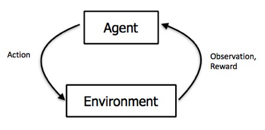
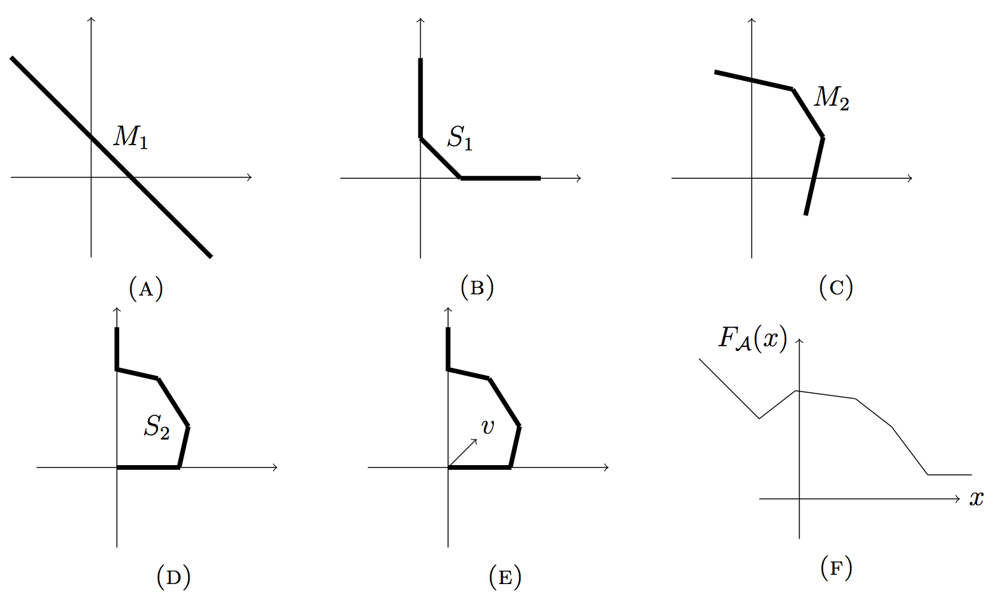
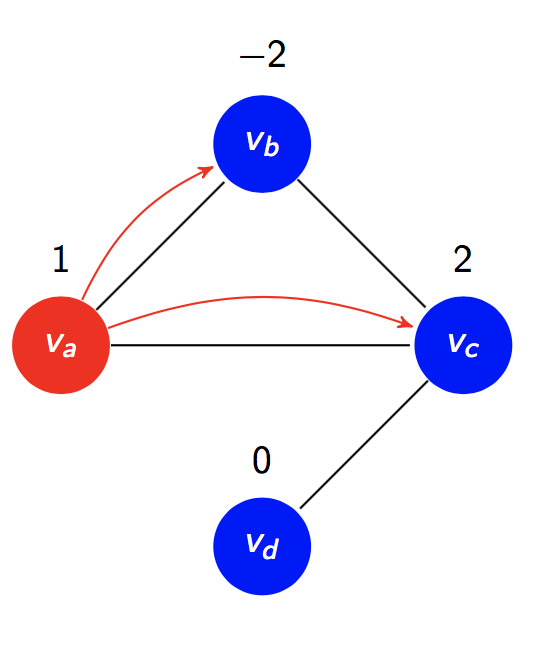
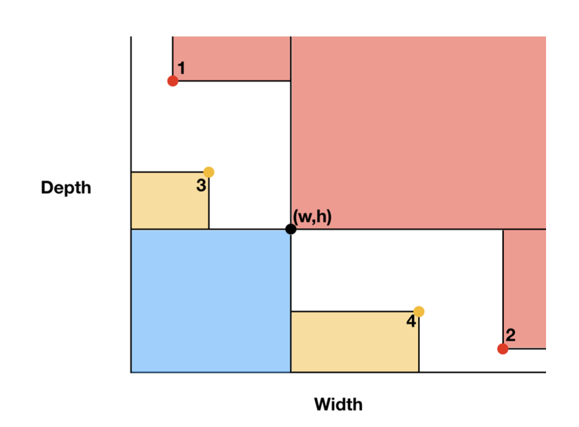
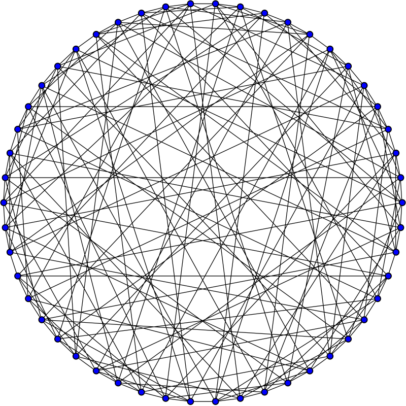
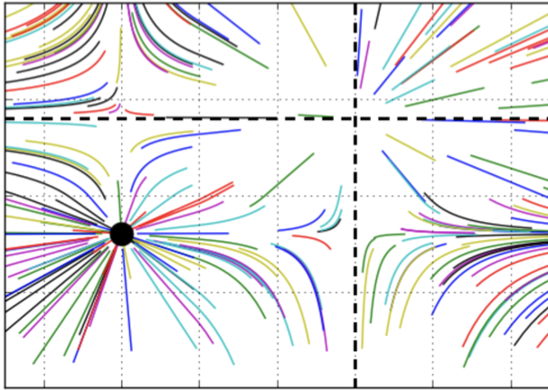
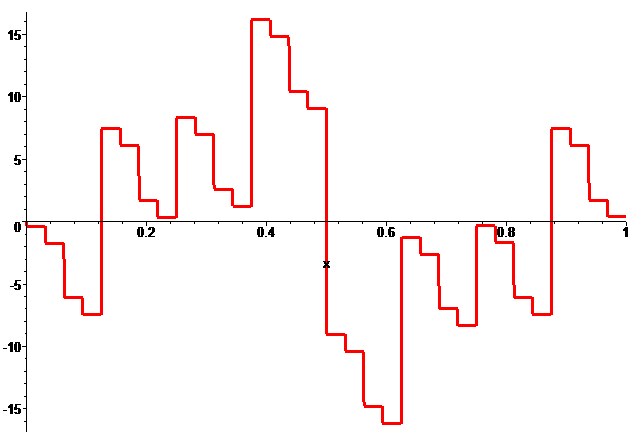
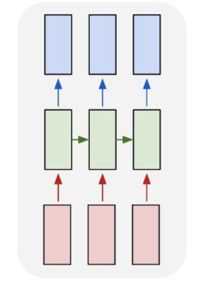
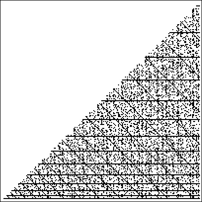
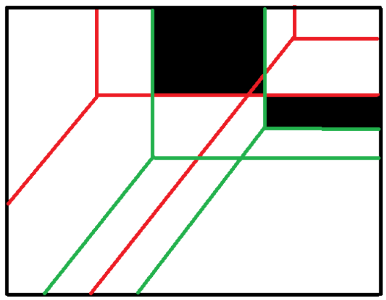

RL intro lecture notes
These are some lecture notes for a few intro RL lectures that I gave in various reading groups this semester. They cover the basics of temporal difference learning and policy gradients with coverage of some of the proofs of a few of the more interesting results.(Fall 2018) [PDF]

The expressive power of neural networks
This is my senior paper for Computer Science at Yale. It is predominantly a review of the literature on the function approximation capabilities of neural networks. The paper reviews recent results in universal approximation of fixed width networks, expressivity depth gaps, and various function complexity metrics. It concludes with a brief discussion of some open questions and potential approaches to them.(Spring 2018) [PDF]

Two-vertex generators of Jacobians of graphs
This is a paper written at the SUMRY REU at Yale that responds to an open question of a recent paper of Becker and Glass. The Jacobian group is the group of divisors on a graph modulo chip firing (or the cokernel of the reduced graph laplacian) and has applications in Algebraic Geometry. This work was inspired by previous work of Sam Payne and Melanie Wood on the probability of a random graph having cyclic Jacobian. We proved a necessary and sufficient condition for a specific type of generator to exist based only on the orders of the Jacobians of a graph with and without a given edge. We also conducted various experiments using SageMath that yielded a few conjectures about the prevalence of these generators in Jacobians of random graphs (code can be found on my github).(2018) Electronic Journal of Combinatorics [Journal] [arXiv] [PDF]

Approximation capabilities of fixed width neural networks
This is a report written for S&DS 670 Neural Nets with professor Andrew Barron. In it I critique a recent NIPS paper of Lu et. al entitled "The expressive power of neural nets: a view from the width". I consider the assumptions they are making and provide a simpler proof of a modified version of their main result. I also provide a general framework with which to view the results from this and some related papers to clarify how to pose the current open questions in the field. Lastly, I conduct some experiments to examine some of the conjectures made in the paper.(Fall 2017) [PDF]

Algebraic graph theory, strongly regular graphs, and Conway's 99 problem
This is my senior essay for the math major at Yale. It goes through some basic algebraic graph theory to build up the theory of strongly regular graphs. Then it examines some recent approaches to proving that certain strongly regular graphs do not exist in hopes of being able to extend these techniques to prove or disprove the existence of the strongly regular graph with parameters (99,14,1,2). However, these techniques all seem infeasible for those specific parameters and the problem remains open.(Fall 2017) [PDF]

Research Presentation at Murray Lab
Slides for a presentation on research on RNN's with ReLU activation functions, presented at the Murray Lab.(Fall 2017) [Slides]

Khintchine Inequality
Slides for my final presentation for Math 731 Topics in Analysis. They present the Khintchine ineqality and its sharp constants. The inequality is a very deep statement about linear combinations of bernoulli random variables and L^2 norms.(Fall 2017) [Slides]
Jacobians of Graphs
Slides to present the research of the above paper. They were presented at Mathfest 2017 in Chicago (winning a prize for outstanding presentation) and at YMC at Ohio State.(Summer 2017) [Slides]


GPU performance for small neural networks
This is a final project for CPSC 424 Parallel Programming. In it, I conduct various experiments on the different hardware available through Yale high performance computing on the speed of training small neural networks. This work was in connection with my work at the Murray Lab, where we want to train many small neural network models rather than a few large ones as may be the case in more traditional machine learning settings. The paper shows how GPU's are not helpful in these cases and tries to find the brightline at which GPU's become advantageous, as well as explaining theoretically why this is the case.(Spring 2017) [PDF]

Miller-Rabin primality testing and the extended Riemann hypothesis
This is an expository report prepared as a final project for Math 354 Number Theory. It explains the Miller-Rabin primality test and how the extended Riemann hypothesis (ERH) is used to prove the polynomial runtime of the algorithm. The paper walks through the proofs in the original paper about the algorithm and also proves the theorems from number theory about quadratic residues and the ERH that Miller relied on to prove the runtime of his algorithm.(Spring 2017) [PDF]
Scalability Limits of HDFS
This is a paper written as a final project for CPSC 438 Database Systems. It explores the scalability limits of the Hadoop Distributed File System (HDFS), we conjecture and expirementally verify a memory botteleneck on the NameNode of the system if there are many small files as opposed to few large files.(Spring 2016) [PDF]

Auction Theory and Tropical Geometry
These slides accoompanied my REU project at SUMRY in 2015. They were presented at Mathfest 2015 in Washington DC.(Summer 2015) [Slides]